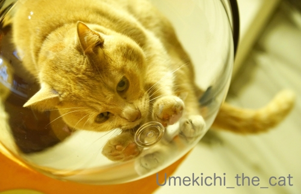
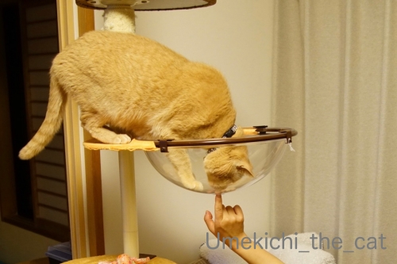
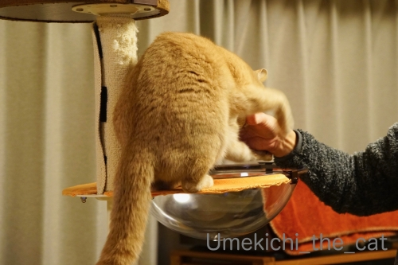
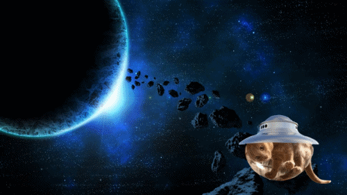
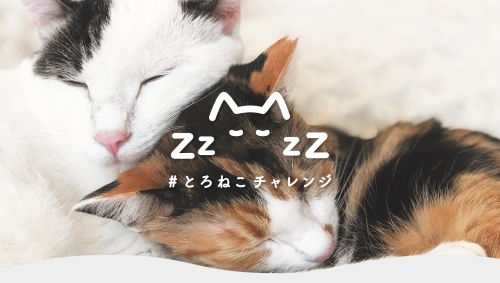
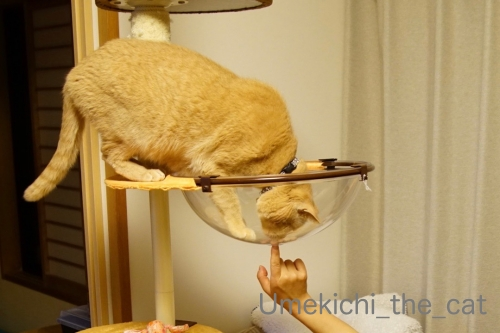
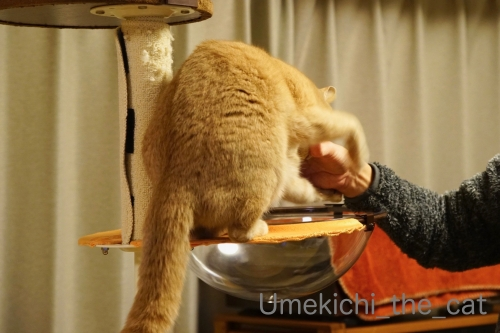
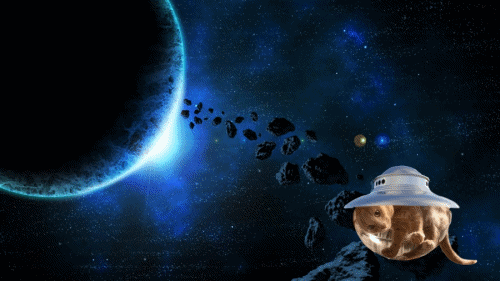
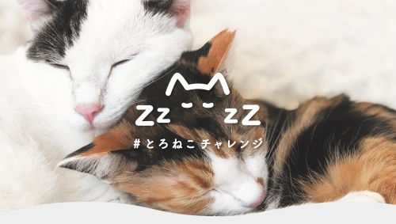

クリアボールは宇宙船！？ [梅吉]

クリアボールにも抵抗なく入る様になった梅吉さん。

おかーさんとは鼻チュー♡

おとーさんとはバトるw
ただし、ブランケットなしでも入るのは遊ぶ時のみ。
眠くなった時にブランケッドがないと
わーわー文句鳴きされます(⌒-⌒;
（35秒 音無です。後半にgifが付いてます＾＾）
遊び道具として？クリアボールを楽しむ梅吉。
この丸さが宇宙船のカプセルの様に見えて・・・・・

こんなことしてみましたw
ぞぞのおっちゃんより さきに うちゅうにいったで わし by 梅吉

「とろけるようにスヤスヤ眠れる猫を一頭でも増やす」ために
保護猫の飼い主募集活動を支援する #とろねこチャレンジ をご存知でしょうか。
#とろねこチャレンジ をつけてTwitterかInstagramに投稿すると
一投稿あたり10円が株式会社花王から
動物の保護活動をするNPO法人ランコントレ・ミグノンに寄付されます。
花王のとろねこチャレンジの詳細ページはこちら
NPO法人ランコントレ・ミグノンのHPはこちら
応募期間は2020年2月7日～4月30日までです。
梅吉も早速参加しましたよ＾＾
 ↑ガブッと一押し↑
↑ガブッと一押し↑
クリアボールにも抵抗なく入る様になった梅吉さん。

おかーさんとは鼻チュー♡

おとーさんとはバトるw
ただし、ブランケットなしでも入るのは遊ぶ時のみ。
眠くなった時にブランケッドがないと
わーわー文句鳴きされます(⌒-⌒;
（35秒 音無です。後半にgifが付いてます＾＾）
遊び道具として？クリアボールを楽しむ梅吉。
この丸さが宇宙船のカプセルの様に見えて・・・・・

こんなことしてみましたw
ぞぞのおっちゃんより さきに うちゅうにいったで わし by 梅吉

「とろけるようにスヤスヤ眠れる猫を一頭でも増やす」ために
保護猫の飼い主募集活動を支援する #とろねこチャレンジ をご存知でしょうか。
#とろねこチャレンジ をつけてTwitterかInstagramに投稿すると
一投稿あたり10円が株式会社花王から
動物の保護活動をするNPO法人ランコントレ・ミグノンに寄付されます。
花王のとろねこチャレンジの詳細ページはこちら
NPO法人ランコントレ・ミグノンのHPはこちら
応募期間は2020年2月7日～4月30日までです。
梅吉も早速参加しましたよ＾＾

カフェオレ色の梅吉

梅吉 2023年8月10日 永眠


梅吉と出会った譲渡会

犬猫の理由なき殺処分ゼロ
妄想広告
UMEKICHI 光

爆発的に早い！
時々攻撃的！
Thanks to Mr.Boss365
爆発的に早い！
時々攻撃的！
Thanks to Mr.Boss365

宇宙船GIF面白い~。梅吉さん尻尾が宇宙に出てるよ~。
クリアボウルもやっぱり慣れなんですね。下から覗いたり鼻チューするのが羨ましいです。
by zombiekong (2020-02-10 00:44)
梅吉君、宇宙なんてすごすぎ！
それにしても下を覗いてる顔、可愛い～
梅吉種、らいむ種！素晴らしいです
どの子も個性いっぱいですもんね（＾＾）
とろねこチャレンジ、微力ですが参加させていただきます
by 藤並 香衣 (2020-02-10 00:46)
動画拝見すると肉球まる出しじゃないですか！
まさに無重力状態のクリアボールは無限の可能性を感じる宇宙ですね。
しかし目線を外さないのはさすが梅吉さん(笑)
そろそろ遊びは終わりにしてブランケット用意してと言ってるようです(^^♪
by yamatonosuke (2020-02-10 01:45)
たぶん土星近辺ですよね？
UFOなら日帰りできるかな（爆）
寝てる写真なら山ほどありますけど、
インスタもツィッターもやってないもので＾＾；
by ぽちの輔 (2020-02-10 07:01)
ほんまやー！見事に宇宙に旅立ってます！
しっぽがはみ出してるのが笑えるー(^_^)
by よーちゃん (2020-02-10 07:12)
クリアボールで寝るには冷たい？つるつるしてるよりふかふかの方が好きとか？
それにしても遊んでくれるようになってそれだけでもうれしいですね。
宇宙船梅吉号、しっぽは外で大丈夫か～？！
by ChatBleu (2020-02-10 07:51)
さすが梅吉さん、いち早く宇宙に進出ですねぇ=(^.^)=
クリアボール、こんな風に遊んでくれると
買ってよかったなぁって思いますよねぇ( ^ω^ )
我が家の場合、耐荷重でアウトですが(⌒-⌒; )
by ニッキー (2020-02-10 07:56)
おおお！遊んでくれるようになったのですね！
すごーーくうれしい。
寝るときはブランケットが必要なのね^^
クリアボール宇宙船、快適そうです。
ぞぞのおっちゃんよりも、はやく宇宙に行けてよかったね！
gifアニメも素晴らしい！！！
#とろねこチャレンジ、情報ありがとう。
さっそくタグ付けしよう^^
by リュカ (2020-02-10 09:20)
宇宙旅行いいニャ～
とろねこって何か美味しそうな感じ（ﾟ□ﾟ）
by 英ちゃん (2020-02-10 09:21)
梅吉さんクリアボールで遊ぶのですね！
お父さんとはバトルになるのですね(^^)
by ma2ma2 (2020-02-10 09:47)
動画拝見しましたよｗ(^^
梅吉さんブランケットをくれｗと鳴き叫ぶ様子も見てみたいですｗリクエスト♪
クリアボールもすっかり使いこなせるでき７る漢になったのですね！
宇宙船gif 面白いｗ回転しながら宇宙の彼方へ？ zozo様よりも先に！
これはポイント高杉君です。
花王のトロ猫チャレンジ、うまい写真が撮れたら参加してみようと思います。
いろいろな活動があるのですね(^^ｖ
by marimo (2020-02-10 09:54)
確かに宇宙船に見えますね(#^.^#)
って尻尾がぁ～（笑
クリアボールから覗くまん丸おめめの
梅吉さんがたまらなく可愛いです♪
by きぃ (2020-02-10 10:33)
わー、宇宙行っちゃってるｗｗｗ
うちのＭは『金星管区』のリーダーを務めております＾＾
ニャコムスペースセキュリティ部金星管区なのです(笑)
梅ちゃん、ぜひお立ち寄りくださいましー(￣▼￣)ﾆﾔｯ
宇宙船っぽいキャリーケースもありますよね♪
まだまだ遊び盛りの年齢ですもんねｗ楽しそうだわぁ❤
とろねこチャレンジ、私も参加いたしまーす∠(￣∧￣)
安心して眠れる環境は大事ですもんね！！
by カトリーヌ (2020-02-10 10:49)
宇宙船かっこいい～♪
梅吉飛行士、ぐるぐる回ってお鼻くっつけてもう余裕たっぷりですね(#^^#)
ウチのは興味を失ったようで一切寄り付かず・・・。
籐のベッドも冬になってから使い始めたことですし、気長に待つことにいたしますっ( ;∀;)
gifは梅吉さんの目線がずっとこっち向いてるのがいいにゃ～♪
お尻尾で舵を取るのかしら？？おばちゃんも一緒に連れてって^^
とろねこチャレンジ情報ありがとうございます！
ぜひぜひ参加させていただきます！！
by ゆきち (2020-02-10 12:22)
こんにちは。
梅吉さんのクリアボール活動？盛んになって来た感じですね。
宇宙船動画ナイスです！！（笑）尻尾が出ているところが気に入りました。
ご主人に「アカデミー賞狙ってますね？」とお伝え下さい（笑）。
「#とろねこチャレンジ」良い活動ですね。
小生、先ずはインスタをやらないといけない感じですが・・・
保護猫活動が社会に浸透、企業参加は良い傾向と感じます！？(=^･ｪ･^=)
by Boss365 (2020-02-10 13:30)
うわ～宇宙船すごい！
梅吉さんのお顔が可愛い～～肉球も^^
クリアボウル、ご一家で満喫中ですね！
こんなに遊んで～こちらもおすそ分け満喫です^^
by sana (2020-02-10 13:49)
おおお。アダムスキー型UFOの船長ですね！
宇宙を闊歩しても必ず戻ってきてね。^^)
とろねこチャレンジ、いいですね。
ですが、Twitterもインスタもやってない私。。。
by yes_hama (2020-02-10 22:00)
梅吉さん宇宙へ～^^映画になりそう？ならないか^^
by ニコニコファイト (2020-02-11 07:13)
本当に宇宙船に見える(^o^)
剛力元彼に勝ちましたね!
さすが梅吉さん、バッチリ決めてくれますね。最高です(^_^)
by kou (2020-02-11 11:44)
クリアボールは宇宙船なのね。
gifアニメも可愛くって楽しくって♪
クリアボールの紹介とともに夫にも見せちゃいましたｗ
とろねこチャレンジ、さっそく参加したよ。
インスタだけだと心配だから、Twitterでも参加しておいた。
教えてくれてありがとう。
まだまだ期間があるからもっと出そうと思ってます(≧▽≦)
by emi (2020-02-11 20:54)
クリアボールをこういうふうに使うの考えた人
すごい！！っていつも思う。(ﾉﾟ▽ﾟ)ﾉ☆
by yuppie (2020-02-11 23:41)
宇宙船 しっぽがオリジナル性を感じます。綺麗なシッポですね。
#とろねこチャレンジ 知っていましたが
ねこが・・・近所のネコでもいいかしらん。
by サンダーソニア (2020-02-12 22:02)
いやん、ホントに宇宙船みたい！
おめめ爛爛でかわいいわあ。しっぽがご愛敬ですね♪
by liang (2020-02-14 10:14)